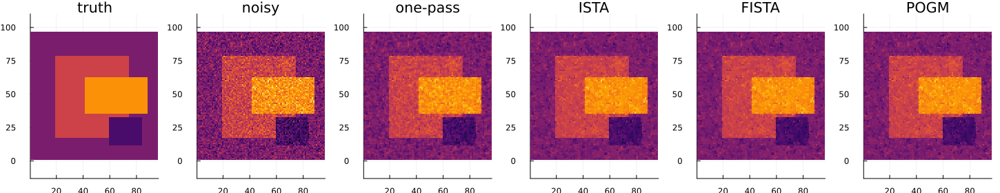

2D TV Denoising
This example compares the current 2D transform-shrink TV experiments:
- one-pass transform-shrink denoising;
- ISTA using the same transform-shrink step;
- FISTA using the same transform-shrink step with Nesterov acceleration;
- MIRT POGM with gradient restart.
These methods are useful for checking the current Kamilov-style 2D pipeline. They are not presented here as final exact 2D TV solvers.
using LinearAlgebra
using Plots
using Random
using TVDenoising
Synthetic image
Random.seed!(2026)
M, N = 96, 96
xtrue = zeros(Float64, M, N)
xtrue[18:78, 20:74] .= 0.7
xtrue[36:62, 42:88] .= 1.4
xtrue[12:32, 60:84] .= -0.4
y = xtrue + 0.25 * randn(M, N)
λ = 0.08;Run the 2D methods
x_onepass = similar(y)
x_ista = similar(y)
x_fista = similar(y)
x_pogm = similar(y)
av = similar(y)
dv = similar(y)
ah = similar(y)
dh = similar(y)
z = similar(y)
xprev = similar(y)
q = similar(y)
qprev = similar(y)
γ_ista = 0.01
γ_fista = 0.00015
ista_maxiter = 1000
fista_maxiter = 1000
pogm_L = 6666.666666666667
pogm_maxiter = 1000
tv2d_kamilov_onepass!(x_onepass, y, λ, av, dv, ah, dh)
tv2d_kamilov_ista!(x_ista, y, λ, av, dv, ah, dh, z, xprev; γ=γ_ista, maxiter=ista_maxiter)
tv2d_kamilov_fista!(x_fista, y, λ, av, dv, ah, dh, z, xprev, q, qprev; γ=γ_fista, maxiter=fista_maxiter)
tv2d_kamilov_pogm!(x_pogm, y, λ; L=pogm_L, maxiter=pogm_maxiter)
rmse(x, xtrue) = norm(x - xtrue) / sqrt(length(x))
println("Noisy RMSE = ", rmse(y, xtrue))
println("One-pass RMSE = ", rmse(x_onepass, xtrue))
println("ISTA RMSE = ", rmse(x_ista, xtrue), " γ = ", γ_ista, " maxiter = ", ista_maxiter)
println("FISTA RMSE = ", rmse(x_fista, xtrue), " γ = ", γ_fista, " maxiter = ", fista_maxiter)
println("POGM RMSE = ", rmse(x_pogm, xtrue), " L = ", pogm_L, " maxiter = ", pogm_maxiter)Noisy RMSE = 0.24872577727892153
One-pass RMSE = 0.15442213621634468
ISTA RMSE = 0.1328989749838951 γ = 0.01 maxiter = 1000
FISTA RMSE = 0.13023307323610875 γ = 0.00015 maxiter = 1000
POGM RMSE = 0.13289538783382077 L = 6666.666666666667 maxiter = 1000
Plot the result
clims = extrema(vcat(vec(xtrue), vec(y), vec(x_onepass), vec(x_ista), vec(x_fista), vec(x_pogm)))
p1 = heatmap(xtrue; title="truth", aspect_ratio=:equal, colorbar=false, clims=clims)
p2 = heatmap(y; title="noisy", aspect_ratio=:equal, colorbar=false, clims=clims)
p3 = heatmap(x_onepass; title="one-pass", aspect_ratio=:equal, colorbar=false, clims=clims)
p4 = heatmap(x_ista; title="ISTA", aspect_ratio=:equal, colorbar=false, clims=clims)
p5 = heatmap(x_fista; title="FISTA", aspect_ratio=:equal, colorbar=false, clims=clims)
p6 = heatmap(x_pogm; title="POGM", aspect_ratio=:equal, colorbar=false, clims=clims)
p = plot(p1, p2, p3, p4, p5, p6; layout=(1, 6), size=(1450, 280));
